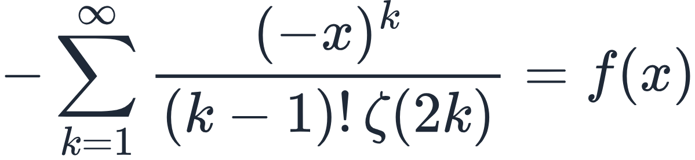

NewScribe 用户帮助
图形、图表与学科元素
图形编辑器、图表、表格、二维码、思维导图、公式、分子结构和国际音标。


12. 图形编辑器#
图形元素使用可编辑路径。
内置图形包括矩形、三角形、平行四边形、梯形、圆形、箭头、星形、爱心和任意不规则图形。
打开图形编辑器的方法：
- 双击图形
- 右键“编辑图形”
- 右侧“编辑图形”按钮
编辑器支持：
- 贝塞尔控制柄
- 钢笔
- 铅笔自由绘制
- 描边
- 填充
- 线型
- 撤销/重做
- 导出 SVG
图形可以像其他元素一样设置出现方式和 镜头。
镜头。
13. 图表、表格、二维码和思维导图#
图表#
支持柱状图、折线图和饼图。
可以编辑标题、系列、数据、颜色、图例和标签。
 图表使用专门的图表展示动画。
图表使用专门的图表展示动画。
表格#
支持标题、行列增减、单元格编辑、边框颜色和字体。
 表格适合列举步骤、对比数据或做知识卡片。
表格适合列举步骤、对比数据或做知识卡片。
二维码#
支持内容、容错等级、前景色、背景色、透明背景和留白边距。
 二维码可以通过右键导出 PNG。
二维码可以通过右键导出 PNG。
思维导图#
可以设置节点内容、节点填充、描边、 文字颜色、连线颜色和间距。
文字颜色、连线颜色和间距。
14. 公式、分子结构和国际音标#
公式#
使用 MathJax 和 mhchem。
支持 LaTeX、物理公式和化学式，例如：
\ce{H2O}也可以直接输入较长的数学公式，例如：
-\sum_{k=1}^\infty \frac{(-x)^k}{(k-1)!\,\zeta(2k)}=f(x)公式元素可以像普通元素一样设置出现方式、停留时间和镜头，也可以导出 SVG。
分子结构#
使用 RDKit 渲染 SMILES，显示分子键线式。
例如输入 c1ccc(cc1)CC(C(=O)O)N，会生成苯丙氨酸的键线式；生成的 SVG 可以像普通元素一样描绘、缩放和导出。
国际音标#
输入 X-SAMPA，自动转换为 IPA，并使用内置 Noto Sans 音标字体。
三者都支持常规出现动画以及 SVG 导出。
进一步说明：图形编辑器的使用思路#
图形编辑器适合制作简单的标志、箭头、框架、流程节点和示意图。
贝塞尔控制柄适合画曲线和圆角；钢笔适合精确落点；铅笔适合快速勾勒。无论用哪种方式，都要注意节点数量。节点越多，路径越复杂，描绘和编辑都越慢。
如果只是画一个矩形或圆形，不必进入编辑器。工具栏里的预设图形已经足够。编辑器更适合“预设图形不够用”的情况。
图形与 SVG 的关系#
图形元素本质上也是矢量路径。它可以设置描边、填充、线型和出现方式，也可以导出为 SVG。
如果你需要复杂的插图、纹理或大量细节，图形编辑器不是最佳工具。它更适合几何图形和简洁线稿。复杂内容应该用 Inkscape 等外部软件制作，再导入 NewScribe。
图表制作建议#
图表的第一目标是“让人看懂”，不是“放最多数据”。
柱状图适合比较类别；折线图适合展示趋势；饼图适合展示比例，但类别不宜太多。图表标题要说明结论，而不仅是“数据图”。
图表出现时，观众需要时间理解坐标轴、图例和数值。停留时间要比普通图标长。数据系列不要太多，颜色要能区分。
图表中的字体和数字也要检查是否清楚，尤其是在手机视频中。
表格的使用场景#
表格适合步骤、对比、参数和清单。它不适合放长段落，也不适合在很小的画面里放太多列。
如果表格很宽，考虑拆成两张表，或者只保留关键列。表格的线框颜色要足够清晰，但不要压过内容。
二维码的注意事项#
 导出视频里的二维码，观众不一定能扫描成功。二维码需要足够的尺寸、对比度和留白。
导出视频里的二维码，观众不一定能扫描成功。二维码需要足够的尺寸、对比度和留白。
如果二维码是视频中的核心信息，建议：
- 停留时间足够长
- 二维码尺寸足够大
- 前景和背景对比明显
- 不要用透明背景叠在复杂画面上
- 导出后实际用手机扫描测试
思维导图的结构#
思维导图适合展示层级和关系。节点文字要短，层级不要太深。
如果一个思维导图有太多节点，观众很难在几秒内读懂。可以拆成多个导图，按层级逐步出现，而不是一次展示整张图。
公式和化学式的排版#
公式使用 LaTeX/MathJax 渲染，化学式使用 mhchem。输入时要遵循语法，缺少反斜杠或括号会导致渲染错误。
公式元素的字号要足够大，尤其是上下标和分数。导出后检查公式是否被裁切。
分子结构使用 RDKit 渲染 SMILES。SMILES 语法错误时，结构不会正确显示。建议先用简单分子测试。
国际音标的输入#
国际音标使用 X-SAMPA 输入，再转换成 IPA。X-SAMPA 是一种用普通 ASCII 字符表示音标的编码，不是直接输入 IPA 字符。
如果音标显示异常，先检查 X-SAMPA 字符串，再检查字体是否包含对应字符。内置 Noto Sans 音标字体覆盖常见音标，但并非所有语言的所有符号都包含。
学科元素的导出#
公式、分子和 IPA 都可以像普通元素一样设置动画，也可以导出 SVG。
如果要把这些元素用于其他软件，可以导出 SVG。